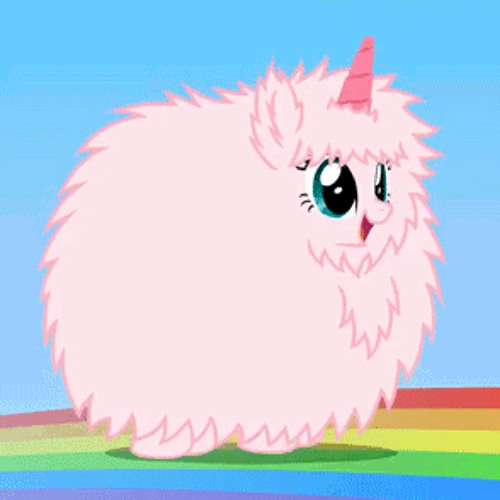

Facts about unicorns

- Unicorns are real.
- They are magic.
- They eat marshmallows. That's why their fur is so fluffy.
- They run on rainbows not only because that's the fastest way to get around, but also because rainbow dust makes their hooves glitter.
More info here
About the Tatzelwurm
Now that's a different story...
The elephant's soft spots

Table
| fruit |
color |
| lemon |
yellow |
| stawberries |
red |
My favorite desserts
- Brownies
- Apple pie
- Raspberry crumble